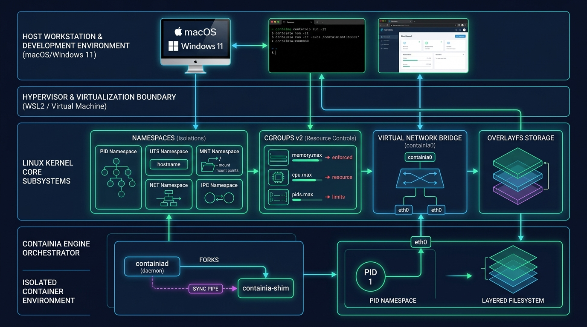

Containia
Deconstructing Docker from Scratch: How Linux Namespaces, Cgroups v2 & OverlayFS Make Containers Real
ทำไมเราถึงสร้าง Container Runtime เอง?
รื้อ "กล่องดำ" ของ Docker เพื่อตอบคำถามที่เรียนในห้องเรียน OS
คิดว่าข้างในมี Hypervisor เล็ก ๆ คอยจำลอง CPU, มี Guest OS Kernel แยกเฉพาะตัว, และบูตเครื่องขึ้นมาใหม่ทุกครั้งที่รัน docker run
ผลลัพธ์: เปลือง RAM มหาศาล บูตช้าเป็นนาที
ไม่มี Hypervisor, ไม่ได้รัน Kernel ซ้อน Kernel ทุกคอนเทนเนอร์ใช้ Host Linux Kernel ร่วมกัน 100% เพียงแต่ถูก Kernel จำกัดมุมมอง (Namespaces) และจำกัดปริมาณการใช้ทรัพยากร (Cgroups)
ผลลัพธ์: สปอว์นเสร็จในหลัก Milliseconds, ประสิทธิภาพเทียบเท่า Native Process
4 เสาหลัก Linux Kernel ที่ประกอบร่างเป็น Container
ฟีเจอร์ระดับระบบปฏิบัติการที่รวมกันจนเกิดเป็น Container Abstraction
1. Namespaces
การแยกมุมมอง (Isolation)หลอก process ให้เห็นเฉพาะทรัพยากรของตนเอง เช่น เห็นตัวเองเป็น PID 1, มี Hostname ตัวเอง, มี Network Interfaces และ Routing Table แยกจากโฮสต์
2. Cgroups v2
จำกัดทรัพยากร (Resource Limits)ควบคุมการกิน RAM ไม่ให้เครื่องดับ (OOM), คุมโควตาเวลา CPU ไม่ให้โปรเซสแย่ง Core อื่น, และจำกัดจำนวน process กัน Fork-Bomb โจมตี
3. OverlayFS
ระบบไฟล์ซ้อนชั้น (Layered Rootfs)
นำ Base Image ที่อ่านได้อย่างเดียว (lowerdir) มาซ้อนกับโฟลเดอร์เขียนชั่วคราว (upperdir) ด้วยกลไก Copy-on-Write พร้อมใช้ pivot_root ตัดขาดจากระบบหลัก
4. Virtual Net
เครือข่ายเสมือน (Connectivity)
สร้าง Linux Bridge (containia0), จับคู่สายแลนเสมือน (veth-pair) ลากข้าม Network Namespace และทำ NAT Masquerade ให้ออกเน็ตได้
Full-Stack Architecture: จาก Host สู่ Container
แผนผังเลเยอร์ตั้งแต่ระดับ macOS / Windows ไปจนถึง Process PID 1 ภายใน Container

The Go Concurrency Trap & Self-Re-exec Pattern
ปัญหาคลาสสิกของภาษา Go: ทำไมสั่ง clone namespaces ตรง ๆ ในฟังก์ชันปกติไม่ได้?
The Trap: Goroutines & OS Threads
ภาษา Go เป็น Multi-threaded Runtime เสมอ แต่ System Call ของ Linux บางตัว เช่น setns หรือ unshare จะมีผลเฉพาะ OS Thread ตัวที่เรียก ไม่ได้ส่งผลต่อทุก Thread ในโปรเซส ทำให้ Goroutine อื่นยังมองเห็น Host เหมือนเดิม
Parent บนโฮสต์สั่ง Fork รันตัวมันเองอีกรอบ พร้อมแปะ Cloneflags ไปกับ syscall clone() ทำให้ Child เกิดมาอยู่ในห้องขังที่ถูกแยกเดี่ยวทันทีก่อน Goroutine จะเริ่มทำงาน
Child Process Execution Lifecycle
Multi-Layer OverlayFS & pivot_root Security
จำลองระบบ Storage ของ OCI/Docker จากจุดเริ่มต้น
OverlayFS (Union Mount Architecture)
เวลาดึง Image อย่าง postgres หรือ alpine มา ตัวชั้น Layer ล่างสุดจะไม่มีการแก้ไขเด็ดขาด:
ถ้า Container แก้ไฟล์ /etc/hosts ระบบจะก๊อปปี้ขึ้นมาที่ upperdir ทันที โดยที่ Base Image ไม่ถูกกระทบเลยแม้แต่ไบต์เดียว
ทำไม Docker ถึงเลิกใช้ `chroot` แล้วเปลี่ยนเป็น `pivot_root`?
แค่เปลี่ยนตัวแปร current root pointer ของ process แต่ตัว mount table เดิมยังอยู่ ถ้า process มีสิทธิ์ root จะสามารถเปิด File Descriptor ทะลุออกไปนอกคุกได้ด้วย relative traversal (../../)
สลับ Root Filesystem ของ Mount Namespace ทั้งระบบอย่างแท้จริง ย้าย Root เดิมของโฮสต์ไปซ่อนที่ /.old_root แล้วสั่ง umount -l ทิ้ง ทำให้ระบบไฟล์ของโฮสต์หายไปจากมุมมองของคอนเทนเนอร์ 100%
Cgroups v2: ควบคุมและทดสอบการชนเพดานทรัพยากร
การใช้ Linux Unified Hierarchy จัดการฮาร์ดแวร์จริง
Fork-Bomb Defense
เขียน loop ปั๊ม (sleep 10 &) จำนวน 200 ตัวรัว ๆ ข้างในคอนเทนเนอร์
✅ ผลลัพธ์: คอนเทนเนอร์ spawn ต่อไม่ได้ ได้รับ EAGAIN แต่เครื่องโฮสต์ยังตอบสนองลื่นไหล 100%
Kernel OOM Killer
รัน dd if=/dev/zero of=/dev/shm/test เพื่อยัดข้อมูล 512MB ลงบนแรมที่จำกัดไว้แค่ 64MB
✅ ผลลัพธ์: Linux Out-Of-Memory Killer ทำงานทันที ฆ่าเฉพาะโปรเซสที่ละเมิด โฮสต์ปลอดภัย
CFS CPU Throttling
รันโปรแกรมคำนวณเลขวนลูป 100% บนคอนเทนเนอร์ที่ตั้งค่า --cpus 0.5 (50,000 / 100,000 µs)
✅ ผลลัพธ์: Linux Completely Fair Scheduler ทำการ suspend เธรดเป็นระยะตรงตามทฤษฎีเป๊ะ
Virtual Networking & The Process Sync Pipe
สายแลนเสมือน (veth-pair) และการแก้ Race Condition ด้วย Pipe บน FD 3
Virtual Network Pipeline
The Real Nightmare: The Network Race Condition
บั๊กที่เจอ: พอ Parent สั่ง Fork ปุ๊บ Child ใน Container บูตขึ้นมาทันทีและพยายามรันคำสั่งของผู้ใช้ แต่ Host Parent ยังย้ายสาย veth เข้าไปใน namespace ไม่เสร็จ ทำให้โปรแกรมในคอนเทนเนอร์แครชเพราะหาการ์ดเน็ตไม่เจอ!
บททดสอบจริง: รัน 3-Tier Production Stack
ไม่ใช่แค่รัน Shell ธรรมดา แต่รันระบบจริงพร้อมกัน 3 คอนเทนเนอร์
Frontend: Next.js 16
Port 3000 -> 3000
รันบน Bun runtime มี WebKit JavaScriptCore ข้างใน ต้องทำ SetupDevNodes mount /dev/shm และ /dev/null เพื่อไม่ให้แครช SIGILL
Backend: Express API
Port 8000 -> 8000
REST API คุยกับ Database ผ่าน Hostname test-db:5432 โดยตรง ด้วยระบบ Inter-Container /etc/hosts Sync อัตโนมัติ
Database: PostgreSQL 18
Port 5432 (Internal)Official OCI Image ดึงตรงจาก Docker Hub มาแกะ Layer สตรีมข้อมูลลงบน Persistent Volume Mount พร้อม IPC Semaphores แบบแยกอิสระ
Browser บนเครื่องจริงเปิด http://localhost:3000 เชื่อมต่อไปยัง API :8000 และ Query ดึงข้อมูลจาก PostgreSQL :5432 ได้แบบไร้รอยต่อ
Containia Monitor & OS Kernel Lab GUI
เปลี่ยนคอนเซปต์นามธรรมใน Kernel ให้มองเห็นและกดเล่นได้ด้วยตาเปล่า
Dual-PID & Namespace Inode Inspector
ระบบแสดงผลเปรียบเทียบสด ๆ ระหว่าง Host PID บนเครื่องจริง กับ Container PID 1 พร้อมอ่านค่า NSpid จาก Kernel /proc/<pid>/status
Interactive OS Chaos Dashboard
ในหน้าเว็บมีปุ่มสั่งยิงการทดลองระดับ Kernel ผ่าน REST API ทันที:
- Interactive Chaos Buttons: กดปุ่มสั่งยิง Fork-bomb หรือสั่งรัน Memory stress เพื่อดู Kernel Events เพิ่มขึ้นแบบ Real-time
- OverlayFS Stack Exploder: ส่องดูรายการไฟล์ใน
upperdirที่ถูก Copy-on-Write ออกมาจริง ๆ - Syscall Flowchart: แสดงเส้นทาง 6 ขั้นตอนตั้งแต่
clone()จนถึงexecve()
//go:embed assets/*
บทสรุปและสิ่งที่เราได้เรียนรู้จากวิชา OS
การเรียนรู้ผ่านการลงมือทำจริง (Learning by Building)
1. Docker ไม่ใช่เวทมนตร์
Container เกิดจากการประกอบร่างอย่างประณีตของฟีเจอร์ Linux ที่มีอยู่แล้ว: Namespaces (หลอกตา) + Cgroups (คุมแรง) + OverlayFS (ซ้อนไฟล์)
2. ทฤษฎีในห้องมีชีวิตจริง
เรื่อง Process States, File Descriptors, POSIX Shared Memory, และ Race Conditions ชัดเจนขึ้นทันทีเมื่อเราต้องจัดการกับ System Call ระดับล่างด้วยตัวเอง
3. ความงามของ Go + Linux
เข้าใจอย่างลึกซึ้งว่าทำไม Docker และ Kubernetes ถึงเลือกภาษา Go สำหรับ Systems Programming และแก้ปัญหาเรื่อง Concurrency ร่วมกับ Kernel ได้อย่างไร
Thank You! / Q&A
GitHub Repository: Containia — Mini Container Runtime From Scratch